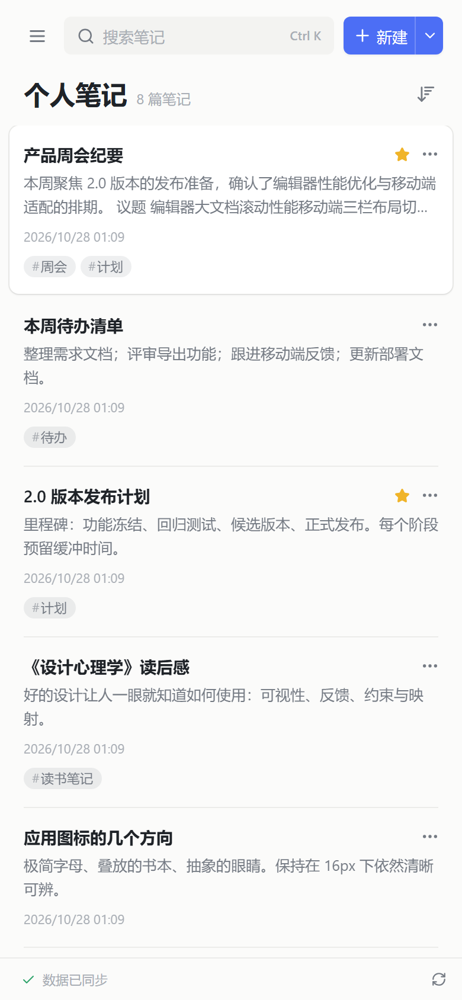
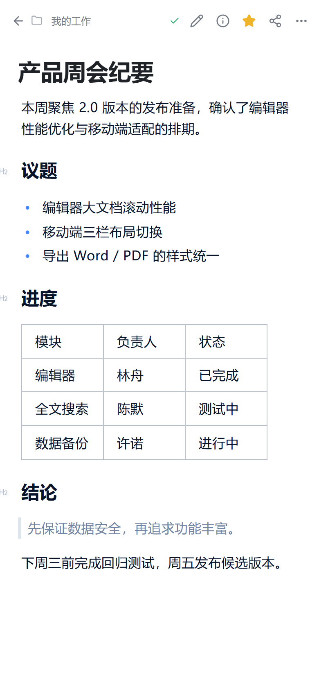
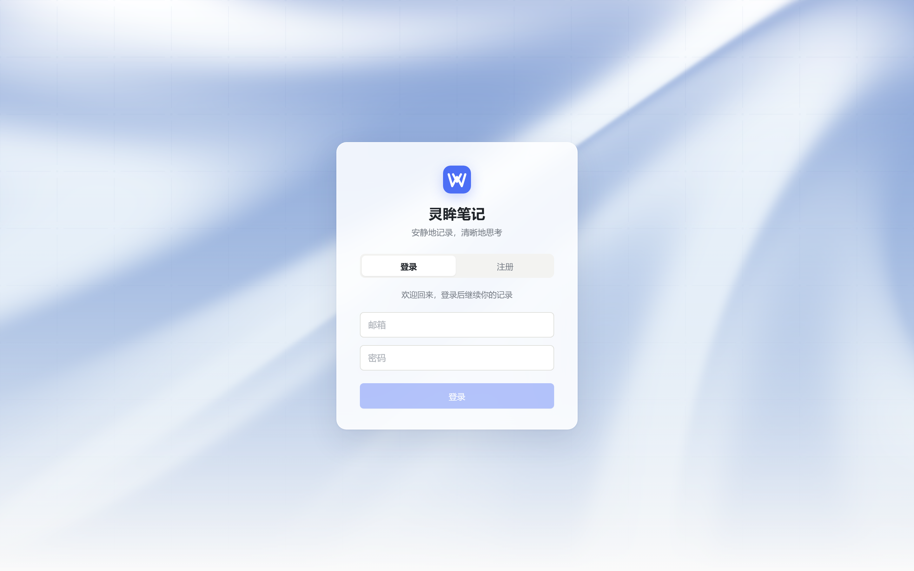

富文本与大纲编辑
标题、列表、待办、表格、代码块、图片与附件，还有流程图和 UML，以及 5 个常用模板。
没有多余的打扰，专注于写作、整理与查找。
标题、列表、待办、表格、代码块、图片与附件，还有流程图和 UML，以及 5 个常用模板。
多级文件夹树配合收藏，按修改时间、创建时间或标题排序，摘要与紧凑两种列表视图。
同时检索标题与正文，Ctrl K 随时唤起，快速定位想要的内容。
每次保存自动留存版本，可随时查看与恢复；未保存的草稿留在浏览器中，刷新也不会丢。
一键生成只读分享链接，随时撤销。
导出 Word、PDF、HTML、Markdown 与纯文本，导入 Markdown 文件；完整 JSON 备份与恢复。
浅色、深色或跟随系统。字号可调，标题层级随正文等比缩放，长时间阅读也不累眼。
窄屏下自动切换为单栏导航：列表、笔记、文件夹逐层进入，随时随地查看与记录。


多账户数据完全隔离。首个账户创建后注册默认关闭，没有默认密码，也不依赖任何第三方服务。

整套服务打包为单个容器镜像，不需要外部数据库、Redis 或搜索集群。
安装 Docker Engine 或 Docker Desktop，以及 Docker Compose v2。
拉取仓库，用 Docker Compose 构建并在后台运行。
打开 http://localhost:8080，注册首个账户即可开始使用。
$ git clone https://github.com/ikiwihome/wixnote.git
$ cd wixnote
$ docker compose up -d --build
# 打开 http://localhost:8080